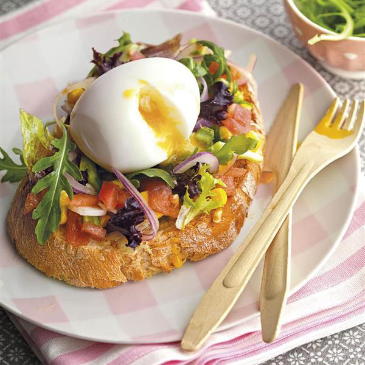

Tostadas con ensalada y huevo cocido
 Según algunos estudios, desayunar huevos ayuda a tomar menos calorías durante el día
porque te dejan saciado durante más tiempo. Pon un picadillo de verduras crudas
sobre el pan y corona con un huevo cocido o pasado por agua.
Ingredientes:
- Huevo
- Pan integral con semillas
- Tomates
- Cebolla
- Verduras verdes a elección